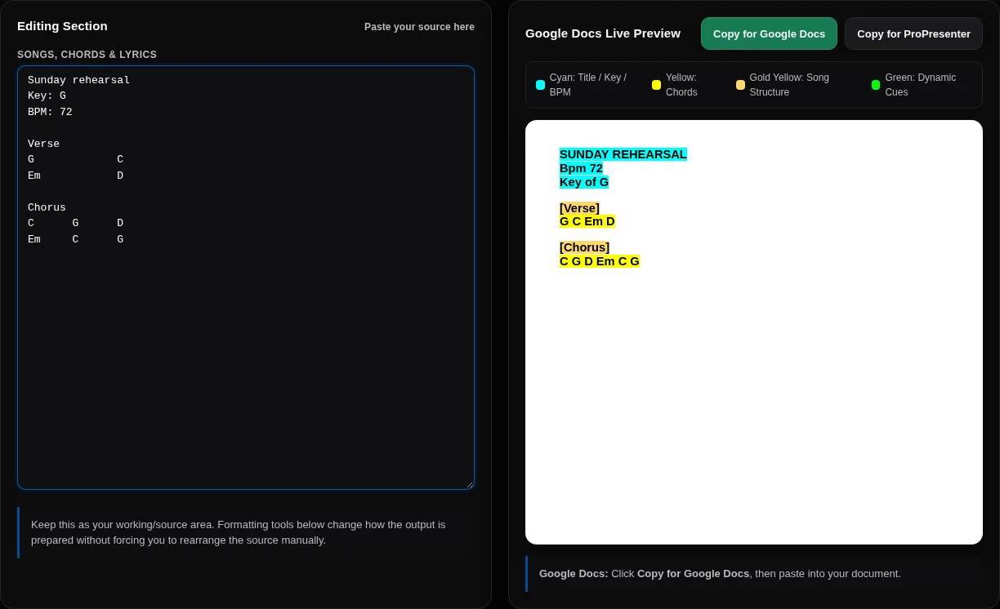
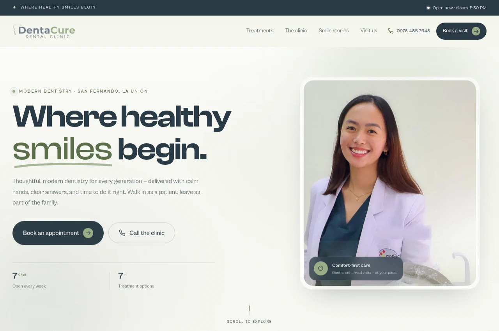
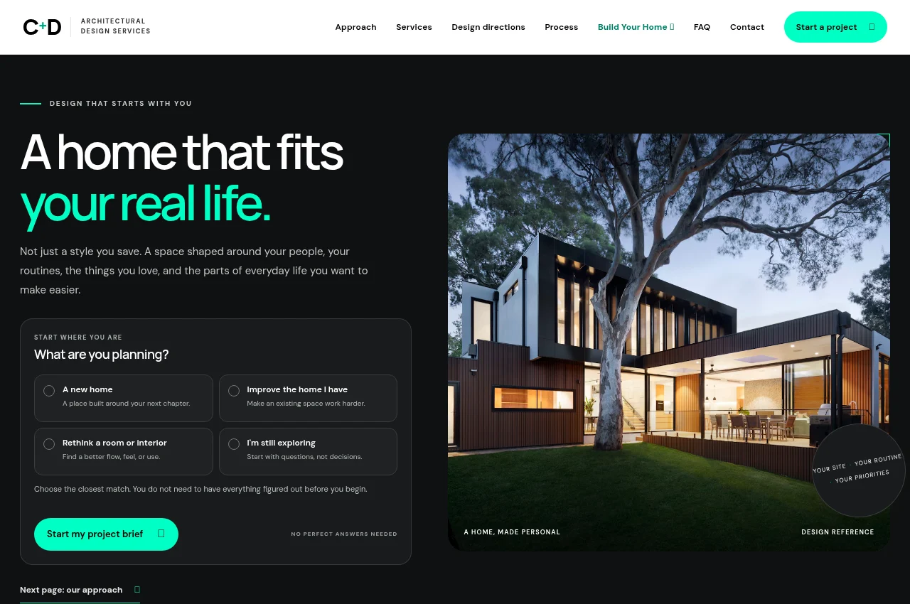

Hello from the Philippines
Ram
Martinez.
I build websites and tools, work in operations, and play bass at church.
First things first.
- 01 God
- 02 Family
- 03 Ministry
- 04 Work
Websites & tools
Selected work.
Projects for local businesses,
our church, and the people around me.

Chess United
A chess club in San Fernando, La Union. Meetups, tournament registration, and merchandise in one place.

Seven Perfume
A fragrance storefront with a scent catalog, bottle sizes, a shopping cart, and shipping options.

Denta Cure
Services, clinic information, and appointment requests for patients in San Fernando.

C + D Architecture
A website for C + D Architectural Design Services, including project inquiries and reference images.
More projects09
Chord Formatter
A tool for our worship team to format chord sheets for Google Docs and ProPresenter.
Music toolEquipment Desk
A church equipment inventory, including instruments and audio gear.
Operations toolChampions Academy
A school website with academic programs, admissions information, and pre-registration.
School websiteUna’s Petshop
A pet shop’s product catalog, inquiries, and directions to the store.
Shop websiteThe Book of Blessings
A shared keepsake where friends and family can write and read blessings.
Web appAdventures of Pebbles
An online journal for poetry, stories, and reflections.
JournalSteward Organizer
A workspace for church responsibilities and team coordination.
Private projectFirst Things First
A devotional app and browser extension that block selected distractions during devotional time.
In developmentChurch network
pfSense configuration, dual-WAN failover, traffic limits, and network monitoring.
Ongoing IT workA little about me
Faith, family,
and everyday life.
What I’m working toward
“To be an excellent man of influence, becoming a champion in life.”
I’m a Filipino husband and a father to a daughter. My relationship with God comes first, and my family is my next priority.
Church & ministry
I serve on the worship and media teams at Champions’ Community, play bass, lead a cell group of young men, and serve as a missionary.
Some of my tools started with things we needed at church, like formatting chord sheets and keeping track of equipment.
Work & learning
My background includes virtual assistance, customer service, e-commerce support, and property-management operations.
I’ve been learning web development by building these projects. I enjoy working out how something works, testing it, and fixing what breaks.
Off-screen
Competitive gaming, bass guitar, hosting, public speaking, and the occasional networking problem to figure out.
Code & ongoing projects